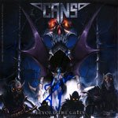

|
|
||
Cans : Beyond the Gates (2004) |
|

http://www.joacimcans.com |
1. Fields of Yesterday 4:45 |
8.0/10 |
|
Beyond the Gates es el primer disco en solitario del cantante de Hammerfall, Joacim Cans. Junto a nombres de prestigio, Matt Sinner al bajo, "Metal" Mike Chlasciak (guitarrista con Halford), Stefan Elmgren (guitarra solista de Hammerfall) y Mark Zonder (batería de Fates Warning), Joacim Cans ha sacado un álbum de esencia muy clásica, y marcadas diferencias con el estilo de Hammerfall. En "Fields of Yesterday" se presentan las bases de este disco: potentes riffs metaleros, melodía aportada en gran medida por la voz y algunos teclados bastante poco originales, pero que contribuyen a crear atmósfera. Algunos coros aquí y allá y un pegadizo estribillo completan un estupendo tema de heavy metal. "Soul Collector" se cimienta sobre un contundente riff a base de guitarras "muteadas", con el que se construye un tema de tempo moderado pero sonido denso y oscuro. Algo del sonido de Hammerfall se deja escuchar en "Red Light", que es un medio tiempo melódico algo predecible. "Back to Hell" es un tema cañero y rápido, de nuevo construído alrededor de un espeso riff de guitarra, y al que un solo de guitarra con efecto de "wah" le salva de la monotonía. Una introducción acústica abre el tema que da nombre al disco, "Beyond the Gates", tras la que las guitarras distorsionadas irrumpen para dominar el resto de la canción. A destacar de este tema los coros que marcan el potente estribillo. "The Key" es otro medio tiempo, con algunas partes que resultan demasiado melodiosas. "Garden of Evil" es otra pieza eminentemente melódica, aunque en este caso hay un mejor equilibrio entre las voces, los teclados y las guitarras, y el estribillo no está mal. Quizás "Merciless" sea el tema en que el estilo que Cans ha querido imprimir en este álbum, metal clásico, melódico, con su voz como protagonista, ha quedado más definido. En "Silent Cries" de nuevo es patente el marcado contraste entre los densos riffs de las guitarras y la cristalina voz de Cans, que en el estribillo se impone. "Dreams" es otra buena canción, bastante original, variada, con cambios de ritmo y de atmósfera y algunos teclados bastante llamativos. "Signs" es otra de las pistas rápidas y potentes, y de nuevo otra buena combinación de fuerza y melodía, con estribillo atrayente. Para finalizar, una canción que nunca debería haberse colado en este disco: "Forever Ends" es una balada lenta, floja, y que le parecería demasiado cursi al mismísimo Phil Collins. En fin... Más oscuro que Hammerfall, pero con habilidad para combinar sonidos brillantes y musicales, trabajando sobre la base de las guitarras, pero con aportaciones normalmente interesantes de los teclados, y con su voz en un gran momento: Joacim Cans ha lanzado un buen disco, clásico pero razonablemente original y que puede gustar incluso a aquellos a los que no les gusta Hammerfall. Un álbum de marcados contrastes. |
||
- Crítica escrita por Rubén Béjar - |
||